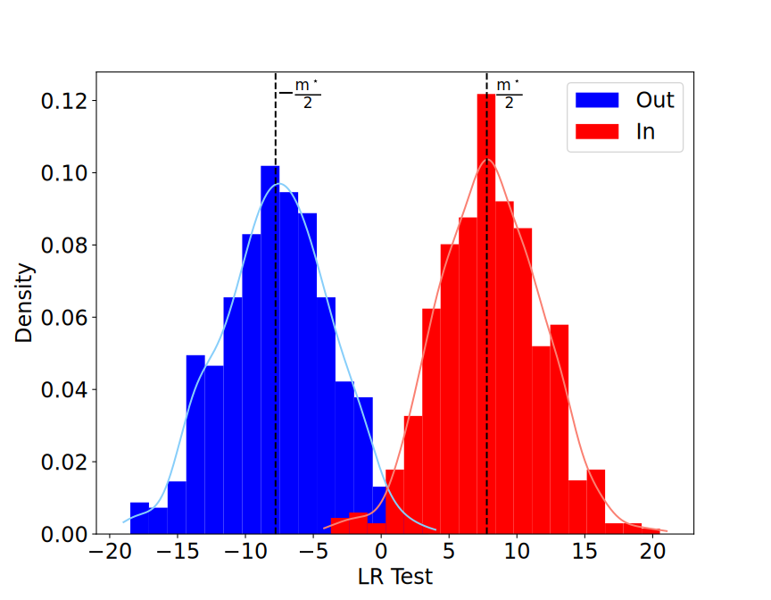

Privacy-Utility Trade-offs in Sequential
Decision-Making under Uncertainty
Jury Members

Context & Motivation
Privacy in Bandits
Sequential Decision-Making
- Make decisions based on data interactively
- Data is sensitive and detailed
- Multi-armed Bandits under Differential Privacy
Multi-armed Bandits

- Learner interacts with an unknown environment
- Goal: maximize rewards
Example: Clinical trials [1]

For the $t$-th patient
- Doctor chooses medicine $a_t \in \{1, \dots, K\}$
- If Patient $t$ is cured $r_t = 1$, otherwise $r_t = 0$
-
[1] W. R. Thompson.
On the likelihood that one unknown probability exceeds another in view of the evidence of two samples
(Biometrika 1933).
Challenge
- Protect the privacy of the patients' data: rewards
- By publishing the actions, risk of leaking information about private rewards
- Other applications: recommender systems, online advertisement, user studies
Main Question: What is the cost of achieving privacy in bandits?
Differential Privacy [1]
Intuition: Indistinguishability from the mass

$\mathcal{M}$ is $\color{blue}{\epsilon}$-DP if $$ \forall d\sim d', \, \forall E\in \mathcal{O}, \, \mathcal{M}_{d}(E) \leq e^{\color{blue}{\epsilon}} \mathcal{M}_{d'}(E) $$
$\color{blue}{\epsilon}$: Privacy budget
-
[1] C.Dwork, F.McSherry, K.Nissim, A.Smith.
Calibrating noise to sensitivity in private data analysis
(TCC 2006).
Differential Privacy

Privacy Auditing: How to certify privacy/estimate the privacy budget?
Privacy Auditing
using Membership Attacks


Main Questions: How to design canaries? How to design optimal attacks?
Outline
- Definitions: privacy and utility in bandits
- Lower bounds: What is the best utility achievable?
- Algorithm design: How to achieve the best utility?
- Revisiting Membership Inference Games
Definitions
Bandits: Utility & Privacy
Stochastic Bandit Interaction
Sequential interaction between:
- a policy $\pi = (\pi_t)_t$
- an environment $\nu = (P_a)_{a \in [K]}$, with means $\mu(\nu) = (\mu_a(\nu))_{a \in [K]}$
At step $t$
- $a_t \sim \pi_t(. \mid a_1, r_1, \dots, a_{t-1}, r_{t-1})$
- $r_t \sim P_{a_t}$
Two Utility Objectives
(a) Regret minimisation: Given a horizon $T$, minimise $$\mathrm{Reg}_{T}(\pi, \nu) \triangleq T \mu^\star(\nu)-\mathbb{E}_{\nu \pi}\left[\sum_{t=1}^{T} r_{t}\right]$$ where $\mu^\star(\nu) \triangleq \max\limits_{a \in [K]} \mu_a(\nu)$
Two Utility Objectives
(b) Best-arm Identification: Find the optimal arm $a^\star(\nu) \triangleq \arg\max\limits_{a \in [K]} \mu_a(\nu)$
Fixed Confidence: Minimise the number of samples used to identify $a^\star(\nu)$ with confidence $1 - \delta \in (0,1)$
Best-arm Identification
- Stop the bandit interaction at time $\tau$
- Recommend a final guess $\widehat{a} \in [K]$
Definition: A strategy is $\delta$-correct for a class $\mathcal{M}$, if $$ \mathbb{P}_{\nu, \pi} ( \tau < \infty, \widehat{a} = a^\star(\nu) ) \geq 1 - \delta$$ for every environment $\nu \in \mathcal{M}$
Goal: Design a $\delta$-correct strategy, with the smallest $\mathbb{E}_{\pi, \nu} [\tau]$
Two Utility Objectives
(a) Regret minimisation: Minimise $\mathrm{Reg}_{T}(\pi, \nu)$
(b) FC-BAI: Minimise $\mathbb{E}_{\pi, \nu} [\tau]$ for $\delta$-correct strategies
Bandits with DP
Privacy Constraint: Rewards may contain sensitive information about individuals

Ingredients to specify:
- The randomized mechanism: induced by the policy $\pi$
- The output: sequence of actions
- The private input dataset
Table DP
Definition: $\pi$ satisfies $\epsilon$-Table DP if $\mathcal{M}^\pi$ is $\epsilon$-DP

View DP
Definition: $\pi$ satisfies $\epsilon$-View DP if $\mathcal{V}^\pi$ is $\epsilon$-DP

Comments on the Definitions [$\ast$]
- $\pi$ is $\epsilon$-Table DP $ \Leftrightarrow $ $\pi$ is $\epsilon$-View DP
- For other variants of DP: Table DP $\subset$ View DP
- For BAI: infinite inputs, output $\{\tau, (a_1, \dots, a_\tau ), \hat{a}\}$
- Interactive DP: rewards are chosen adaptively by an adversary
[$\ast$] A. Azize, D. Basu. Concentrated Differential Privacy for Bandits (SaTML 2024)
Objectives
Recap
- Design an $\epsilon$-DP policy $\pi$ that minimises $\mathrm{Reg}_{T}(\pi, \nu)$
- Design an $\epsilon$-DP $\delta$-correct strategy $\pi$ that minimises $\mathbb{E}_{\pi, \nu} [\tau]$
Lower Bounds
Regret Lower Bound
Theorem. For any $\epsilon$-DP policy $\pi$ consistent over a class of environments $\mathcal{M}$ $$ \liminf _{T \rightarrow \infty} \frac{\mathrm{Reg}_{T}(\pi, \nu)}{\log (T)} \geq \sum_{a: \Delta_{a}>0} \frac{\Delta_a}{\min \biggl( \underset{\text{without DP}}{\underbrace{\textrm{KL}_\textrm{inf}\left(P_{a}, \mu^\star, \mathcal{M}_a\right)}}, \underset{\text{with $\epsilon$-DP}}{\underbrace{\epsilon \, \textrm{TV}_\textrm{inf}\left(P_{a}, \mu^\star, \mathcal{M}_a\right)}} \biggl)} $$ where $\Delta_a \triangleq \mu^\star - \mu_a$ and $$\textrm{d}_\textrm{inf} (P, \mu^\star, \mathcal{M}) \triangleq \inf_{P' \in \mathcal{M}} \left\{ \textrm{d}(P, P'): \mu(P') > \mu^\star \right\}$$
[$\ast$] A. Azize, D. Basu. When Privacy Meets Partial Information: A Refined Analysis of Differentially Private Bandits (NeurIPS 2022).
Regret Lower Bound
Simplification and Comments
$$ \liminf _{T \rightarrow \infty} \frac{\mathrm{Reg}_{T}(\pi, \nu)}{\log (T)} \geq \sum_{a: \Delta_{a}>0} \frac{\Delta_a}{\min \biggl( d_a, \epsilon t_a \biggl)} $$
- $d_a \approx \Delta_a^2$ and $t_a \approx \Delta_a$, the lower bound simplifies to $$\Omega\left(\sum_a \frac{\log(T)}{\min\{ \Delta_a, \epsilon\}}\right)$$ and retrieves the known lower bound for private Bernoulli bandits [1]
[1] R. Shariff, O. Sheffet. Differentially Private Contextual Linear Bandits (NeurIPS 2018).
- Two hardness regimes:
- A low privacy regime when $\epsilon > \frac{d_a}{t_a} \approx \Delta_a$: non-private lower bound is dominant
- A high privacy regime when $\epsilon \leq \frac{d_a}{t_a}\approx \Delta_a$: private lower bound is dominant
Sample Complexity Lower Bound
Theorem. For any $\epsilon$-DP $\delta$-correct strategy $\pi$ $$ \mathbb{E}_{\boldsymbol{\nu}, \pi}[\tau] \geq \max\big( \underset{\text{without DP}}{\underbrace{T^{\star}_{\mathrm{KL}}(\boldsymbol{\nu})}}, \underset{\text{with $\epsilon$-DP}}{\underbrace{\frac{1}{\epsilon} T^{\star}_{\mathrm{TV}}(\boldsymbol{\nu})}}\big) \log \left( \frac{1}{3 \delta}\right) $$ where $\left(T^{\star}_{\textbf{d}}(\boldsymbol{\nu}) \right)^{-1} \triangleq \sup _{\omega \in \Sigma_K} \inf _{\boldsymbol{\lambda} \in \operatorname{Alt}(\boldsymbol{\nu})} \sum_{a=1}^K \omega_a \textbf{d}(\nu_a, \lambda_a)$.
[$\ast$] A. Azize, M. Jourdan, A. Marjani, D. Basu. On the Complexity of Differentially Private Best-Arm Identification with Fixed Confidence (NeurIPS 2023).
Sample Complexity Lower Bound
Simplification and Comments
$$ \mathbb{E}_{\boldsymbol{\nu}, \pi}[\tau] \geq \max\big( T^{\star}_{\mathrm{KL}}(\boldsymbol{\nu}), \frac{1}{\epsilon} T^{\star}_{\mathrm{TV}}(\boldsymbol{\nu})\big) \log \left( \frac{1}{3 \delta}\right) $$
- $T^{\star}_{\mathrm{KL}}(\boldsymbol{\nu}) \approx \sum_{a} \frac{1}{\Delta_a^2}$ and $T^{\star}_{\mathrm{TV}}(\boldsymbol{\nu}) \approx \sum_{a} \frac{1}{\Delta_a}$
- Two hardness regimes:
- A low privacy regime when $\epsilon > \frac{T^{\star}_{\mathrm{TV}}(\boldsymbol{\nu})}{T^{\star}_{\mathrm{KL}}(\boldsymbol{\nu})}$: non-private lower bound is dominant
- A high privacy regime when $\epsilon \leq \frac{T^{\star}_{\mathrm{TV}}(\boldsymbol{\nu})}{T^{\star}_{\mathrm{KL}}(\boldsymbol{\nu})}$: private lower bound is dominant
Lower Bound Proof
- Reduction to hypothesis testing
- Construct two bandit environments that are conflicting:
- Actions that are good for one environment are bad for the other
- The two environments are hard to distinguish
Privacy as a "stability" constraint: How similar is the sequence of actions when $\pi$ interacts with two environments $\nu$ and $\nu'$?
Group Privacy

Theorem. If $\mathcal{M}$ is $\epsilon$-DP $$ \mathcal{M}_{d}(E) \leq e^ {\epsilon d_{\mathrm{Ham}}(d, d')} \mathcal{M}_{d'}(E) $$ $d_{\mathrm{Ham}}(d, d') \triangleq \sum_{t=1}^T \mathbb{1}\left(d_t \neq d'_t\right)$.
Consequence. $\mathrm{KL}(\mathcal{M}_d, \mathcal{M}_{d'}) \leq \epsilon d_{\mathrm{Ham}}(d, d') $
Question: What happens when $d$ and $d'$ are stochastically generated?
Stochastic Group Privacy
Definition. Marginal over output, when the dataset is generated using $\mathbb{P}$ $$ M^\mathbb{P} (E) \triangleq \int_{d \in \mathcal{X}^T } \mathcal{M}_d\left(E \right) \mathrm{d}\mathbb{P} \left(d\right) $$
Question: For two distributions $\mathbb{P}$ and $\mathbb{Q}$, how to control the quantity $\mathrm{KL}\left(M^\mathbb{P}, M^\mathbb{Q} \right)$?
First Attempt
Data-processing Inequality

$$ \mathrm{KL}\left(M^\mathbb{P}, M^\mathbb{Q} \right) \leq \mathrm{KL}\left(\mathbb{P}, \mathbb{Q} \right) $$
Second Attempt
Couplings

$$ \mathrm{KL}\left(M^\mathbb{P}, M^\mathbb{Q} \right) \leq \inf_{\mathcal{C} \in \Pi\left( \mathbb{P}, \mathbb{Q} \right)} \mathbb{E}_{(d, d') \sim \mathcal{C}} \left[ \mathrm{KL}\left(\mathcal{M}_d, \mathcal{M}_{d'} \right) \right] $$
Couplings and Group Privacy
$$ \mathrm{KL}\left(M^\mathbb{P}, M^\mathbb{Q} \right) \leq \inf_{\mathcal{C} \in \Pi\left( \mathbb{P}, \mathbb{Q} \right)} \mathbb{E}_{(d, d') \sim \mathcal{C}} \left[ \mathrm{KL}\left(\mathcal{M}_d, \mathcal{M}_{d'} \right) \right] $$
If $\mathcal{M}$ is $\epsilon$-DP, then $$\mathrm{KL}(\mathcal{M}_d, \mathcal{M}_{d'}) \leq \epsilon d_{\mathrm{Ham}}(d, d')$$
Solve the transport problem
$$ \inf_{\mathcal{C} \in \Pi\left( \mathbb{P}, \mathbb{Q} \right)} \mathbb{E}_{(d, d') \sim \mathcal{C}} \left[ d_{\mathrm{Ham}}(d, d') \right] $$
Couplings and Total Variation
Product Distributions
There exists a maximal coupling $c_\infty(\mathbb{P}, \mathbb{Q})$ such that $$ \begin{align} \inf_{\mathcal{C} \in \Pi\left( \mathbb{P}, \mathbb{Q} \right)} \mathbb{E}_{(X, Y) \sim \mathcal{C}} \left[\mathbb{1}\left (X \neq Y\right)\right] &= \mathbb{E}_{(X, Y) \sim c_\infty(\mathbb{P}, \mathbb{Q})}\left[\mathbb{1}\left (X \neq Y\right)\right]\\ &= \mathrm{TV}\left(\mathbb{P}, \mathbb{Q}\right) \end{align} $$
For $\mathbb{P} =\bigotimes_{t = 1}^T \mathbb{P}_{t} $ and $\mathbb{Q} =\bigotimes_{t = 1}^T \mathbb{Q}_{t}$, using $\mathcal{C}_\infty(\mathbb{P}, \mathbb{Q}) \triangleq \bigotimes_{t = 1}^T c_\infty\left(\mathbb{P}_t, \mathbb{Q}_t\right)$: $$ \mathrm{KL}\left(M^\mathbb{P}, M^\mathbb{Q} \right) \leq \epsilon \sum_{t = 1}^T \mathrm{TV}\left(\mathbb{P}_t, \mathbb{Q}_t\right) $$
Couplings and Total Variation
Bandit Interaction
Theorem.[$\ast$] $\mathbb{M}_{\nu \pi}$ is the marginal over sequence of actions, when $\pi$ interacts with $\nu$. Then, for all $ \nu = (P_a)_{a \in [K]}$ and $\nu' = (P'_a)_{a \in [K]}$ $$ \mathrm{KL}\left(\mathbb{M}_{\nu \pi}, \mathbb{M}_{\nu' \pi} \right) \leq \epsilon \mathbb{E}_{\nu \pi} \left[ \sum_{t = 1}^T \mathrm{TV} \left(P_{a_t}, P'_{a_t}\right) \right] $$
Proof. Construct a maximally "coupled environment"
[$\ast$] A. Azize, D. Basu. Concentrated Differential Privacy for Bandits (SaTML 2024)
Retrieving the Lower bounds
Plugging the KL upper bound into classic lower bound proof, we generate:
- Minimax and problem-dependent regret lower bounds
- Sample complexity lower bound
- Regret lower bounds under a linear structure
- Generalisation to zero Concentrated DP
Lower Bounds
Recap
- Regret lower bounds for $\epsilon$-DP consistent policies is $$\Omega\left(\sum_a \frac{\log(T)}{\min\{ \Delta_a, \epsilon\}}\right)$$
- Sample complexity lower bound for $\delta$-correct $\epsilon$-DP strategies is $$\Omega\left(\max\left\{ T^{\star}_{\mathrm{KL}}(\boldsymbol{\nu}), \frac{1}{\epsilon} T^{\star}_{\mathrm{TV}}(\boldsymbol{\nu})\right\} \log \left( \frac{1}{ \delta}\right)\right)$$
Algorithm Design
Generic Recipe
 1. Characterise a sequence of "sufficient" statistics:
1. Characterise a sequence of "sufficient" statistics:
i.e. the sequence of actions only depend on these statistics
2. Estimate the sequence of "sufficient" statistics privately- Adding calibrated noise
- Run the algorithm in phases, with forgetting
Finite-armed Stochastic Bandits
The UCB Algorithm [1]
At step $t$, UCB chooses the arm $A_{t} \in \operatorname{argmax}\limits_{a \in [K]} I_a(t-1)$
where $ I_a(t-1) = \hat{\mu}_a(t - 1) + \sqrt{\frac{\alpha \log(t)}{2 N_a(t - 1)}} $
Theorem. $\mathrm{Reg}_{T}(\mathrm{UCB}, \nu) \leq C \sum_{a: \Delta_a > 0} \frac{ \log(T)}{\Delta_a}$
Question: How to design a near-optimal $\epsilon$-DP version of UCB?
[1] P. Auer, N. Cesa-Bianchi, and P. Fischer. Finite-time analysis of the multiarmed bandit problem. (Machine Learning, 2002).
AdaP-UCB[$\ast$]

- Compute $A_{\ell} = \operatorname{argmax}_{a} \color{blue}{\operatorname{I}_{a}^{\epsilon}}(t_{\ell} - 1, \alpha)$
- Choose arm $A_{\ell}$ until round t such that $N_{A_\ell}(t) = 2N_{A_\ell}(t_{\ell} - 1)$
- Update $\operatorname{I}_{a}^{\epsilon}$ using only reward samples from the last episode
$$\color{blue}{\operatorname{I}_{a}^{\epsilon}}(t_{\ell}, \alpha) \triangleq \underset{\text{Non-private index}}{\underbrace{\hat{\mu}_{a}^{\ell} + \sqrt{ \frac{ \alpha \log(t_{\ell})}{ 2\times \frac{1}{2} N_a(t_\ell) } }}} + \underset{\text{Laplace noise}}{\underbrace{\mathrm{Lap} \left( \frac{1}{\epsilon \times \frac{1}{2} N_a(t_\ell)} \right)}} + \underset{\text{Privacy bonus}}{\underbrace{\frac{\alpha \log( t_{\ell})}{ \epsilon \times \frac{1}{2} N_a(t_\ell )} }}$$ Theorem. AdaP-UCB is $\epsilon$-DP for rewards in $[0,1]$ and for $\alpha > 3$ $$ \mathrm{Reg}_{T}(\mathsf{AdaP\text{-}UCB}, \nu) \leq \sum\limits_{a \colon \Delta_a > 0} \left ( \frac{16 \alpha }{\min\{\Delta_a, \epsilon\}} \log(T) + \frac{3 \alpha}{\alpha - 3} \right ) $$ [$\ast$] A. Azize, D. Basu. When Privacy Meets Partial Information: A Refined Analysis of Differentially Private Bandits (NeurIPS 2022).
Extension to Other Settings
FC-BAI [$\ast$]: Top Two algorithms [1]
- Sequence of "sufficient" statistics $(\hat \mu_{a}(t))_{t,a}$
- Arm-dependent doubling, with forgetting
- Re-calibrating the stopping time thresholds for noise addition
[$\ast$] A. Azize, M. Jourdan, A. Marjani, D. Basu. On the Complexity of Differentially Private Best-Arm Identification with Fixed Confidence (NeurIPS 2023) Linear Bandits [$\ast$]: similar arms have similar rewards
- $a \in \mathbb{R}^d$ and $r_t \triangleq \left\langle\theta^\star, a_{t}\right\rangle+\eta_{t}$
- Sequence of "sufficient" statistics: estimated $(\hat \theta(t))_{t}$
- Elimination-based algorithms: already runs in independent phases
- Explore each arm longer due to noise addition
[$\ast$] A. Azize, D. Basu. Concentrated Differential Privacy for Bandits (SaTML 2024) Contextual Linear Bandits [$\ast$]: the best medicine depends on the patient
- $c_t \in \mathbb{R}^d$ is the context and $r_t = \left \langle \theta^\star, \psi(a_t, c_t) \right \rangle + \eta_{t}$
- Sequence of "sufficient" statistics $(\hat \theta(t))_{t}$
- Phase change in LinUCB: doubling of determinant of the design matrix
- Calibrating the ellipsoid confidence intervals for noise addition
- The contexts are supposed to be public!
[$\ast$] A. Azize, D. Basu. Concentrated Differential Privacy for Bandits (SaTML 2024)
Experiments

Algorithm Design
Recap
Using the same algorithmic blueprint, we design near-optimal private bandit algorithms in different settings
Membership Inference Games
Setting

Main question:
Given $z^\star \in \mathcal{Z}$ and $o \sim \mathcal{M}_D$, is it possible to determine if $z^\star \in D$?
Motivation
- Studied first as a privacy attack
- [Homer et al., 2008] for the empirical mean
- [Shokri et al., 2017] for machine learning
- Used for privacy auditing
The Membership Inference Game
A game between:
- A crafter $\mathcal{C}$: entity with access to the input dataset and the mechanism $\mathcal{M}$
- An adversary $\mathcal{A}_{z^\star}$: tries to determine whether $z^\star$ is in the input dataset
The crafter $\mathcal{C}$:
- Input: $\mathcal{M}$, $n$ and $z^\star$, distribution $\mathcal{D}$
- Builds dataset $D \sim \bigotimes_{i = 1}^n \mathcal{D}$
- Sample $b \sim \mathrm{Ber}\left ( 1/2 \right)$
- If $b = 1$:
- Include $z^\star$ in $D$ at a random position
- Sample $o \sim \mathcal{M}(D)$
- Output: $(o, b)$
- Input: $o \in \mathcal{O}$
- Output: $\hat{b} \sim \mathcal{A}_{z^\star}(o)$, where $\hat{b} \in \{0,1\}$
- Input: crafter $\mathcal{C}$, adversary $\mathcal{A}_{z^\star}$, number of rounds $T$
- For $t = 1, \dots, T$:
- Sample $(o_t, b_t) \sim \mathcal{C}(\mathcal{M}, n, z^\star, \mathcal{D})$
- $\hat{b}_t \sim \mathcal{A}_{z^\star}(o_t)$
- Output: $\left\{ \mathbb{1} \left( b_t = \hat{b}_t \right) \right\}_{t = 1}^T$
Performance Metrics
- The advantage is a recentred accuracy: $$\mathrm{Adv}(\mathcal{A}_{z^\star}) \triangleq 2 \mathrm{Pr} [\mathcal{A}_{z^\star}(o) = b ] - 1$$
- The power under significance $\alpha$ is the max TPR at FPR $\alpha$: $$ \mathrm{Pow}(s, \alpha) \triangleq \max_{\tau \in T_\alpha} \mathrm{Pr} \left[s(o, z^\star) \geq \tau \mid b = 1\right] $$ for $\mathcal{A}_{s, \tau, z^\star}(o) = \mathbb{1} \left( \underset{\text{score}}{\underbrace{s(o, z^\star)}} \geq \tau \right)$ where $$T_\alpha \triangleq \left \{ \tau \in \mathbb{R}: \mathrm{Pr} \left[s(o, z^\star) \geq \tau \mid b = 0 \right] \leq \alpha \right \}$$
Optimal Adversary
The Neyman-Pearson Lemma
MIG can be seen as a hypothesis test:
- Under $H_0$, $z^\star$ was "not included", $o \sim p^\mathrm{out}(o \mid z^\star)$
- Under $H_1$, $z^\star$ was "included", $o \sim p^\mathrm{in}(o \mid z^\star)$
Then, the log-likelihood ratio score is: $$ \ell(o; z^\star) \triangleq \log\left( \frac{p^\mathrm{in}(o \mid z^\star)}{p^\mathrm{out}(o \mid z^\star)} \right) $$ The LR-based attacker is: $$\mathcal{A}_{\ell, \tau, z^\star}(o) = \mathbb{1} \left(\ell(o; z^\star) \geq \tau\right)$$ The Bayes attacker is $\mathcal{A}_{\mathrm{Bayes}, z^\star} \triangleq \mathcal{A}_{\ell, 0, z^\star}$.
Leakage by the Optimal Attacker
Theorem.
- $ \forall$ adversary $\mathcal{A}_{z^\star}$: $$ \mathrm{Adv}(\mathcal{A}_{z^\star}) \leq \mathrm{Adv}(\mathcal{A}_{\mathrm{Bayes}, z^\star}) = \mathrm{TV} \left(p^\mathrm{out}(. \mid z^\star), p^\mathrm{in}(. \mid z^\star)\right)$$
- $ \forall$ score $s$, $\forall \alpha \in [0,1]$: $$ \mathrm{Pow}(s, \alpha) \leq \mathrm{Pow}(\ell, \alpha)$$
Definition. The membership leakage of $z^\star$, for $\mathcal{M}$, under distribution $\mathcal{D}$ is $$ \begin{align} \xi(z^\star, \mathcal{M}, \mathcal{D}) &\triangleq \mathrm{Adv}(\mathcal{A}_{\mathrm{Bayes}, z^\star}) \\ &= \mathrm{TV} \left(p^\mathrm{out}(. \mid z^\star), p^\mathrm{in}(. \mid z^\star)\right) \end{align} $$
How to quantify $\xi(z^\star, \mathcal{M}, \mathcal{D})$?
The Empirical Mean
- The mechanism: $$\left.\begin{matrix} z_1 \in \mathbb{R}^d\\ z_2 \in \mathbb{R}^d\\ .\\ . \\ z_n \in \mathbb{R}^d\\ \end{matrix}\right\} \xrightarrow{\mathcal{M}^\mathrm{emp}}\hat\mu_n \triangleq \frac{1}{n} \sum_{i = 1}^n z_i \in \mathbb{R}^d $$
- Assumption on data-generating distribution $\mathcal{D}$:
- Column-wise independent $\mathcal{D} = \bigotimes_{j = 1}^d \mathcal{D}_j$
- Population mean $\mu = (\mu_1, \dots, \mu_d) \in \mathbb{R}^d$
- Covariance $C_\sigma = \mathrm{diag}(\sigma_1^2, \dots, \sigma_d^2) \in \mathbb{R}^{d\times d}$
- Finite 4-th moment
Main tool: Asymptotic normality, when both $n,d \rightarrow \infty$, such that $d/n = \tau$
Assymptotic distribution of the LR score
Theorem.[$\ast$] For any $\mathcal{D}$ with finite 4-th moment, as $d,n \rightarrow \infty$ s.t. $d/n = \tau$, we show
- Under $H_0$: $\ell_n(\hat{\mu}_n; z^\star, \mu, C_\sigma ) \rightsquigarrow \mathcal{N}\left(-\frac{1}{2} \color{blue}{m^\star}, \color{blue}{m^\star} \right)$
- Under $H_1$: $\ell_n(\hat{\mu}_n; z^\star, \mu, C_\sigma ) \rightsquigarrow \mathcal{N}\left(\frac{1}{2} \color{blue}{m^\star}, \color{blue}{m^\star} \right)$
$ \color{blue}{m^\star} \triangleq\lim_{n,d} \frac{1}{n} \| z^\star - \mu \|^2_{C_\sigma^{-1}} $

[$\ast$] A. Azize, D. Basu. Quantifying the target-dependent Membership Leakage (TPDP 2024).
Assymptotic distribution of the LR score
Proof main steps:
- Edgeworth Expansion of the LR test: $$\ell_n(\hat{\mu}_n; z^\star, \mu, C_\sigma) = (z^\star - \mu)^T C_\sigma^{-1}(\hat{\mu}_n - \mu) - \frac{1}{2n} \|z^\star - \mu\|^2_{C_\sigma^{-1}} + o_p(1)$$
- Lindeberg-Feller CLT to get the asymptotic distribution of the LR test
Membership Leakage of the Mean
Theorem.[$\ast$] The asymptotic leakage of $z^\star$ in the empirical mean is: $$\lim_{n,d} \xi_n(z^\star, \mathcal{M}^\mathrm{emp}_n, \mathcal{D}) = \Phi\left (\frac{\sqrt{\color{blue}{m^\star}}}{2}\right) - \Phi\left(-\frac{\sqrt{\color{blue}{m^\star}}}{2}\right)$$
The optimal asymptotic power under significance $\alpha$: $$\lim_{n,d} \mathrm{Pow}_n(\ell_n, \alpha, z^\star) = \Phi\left( \Phi^{-1}(\alpha) + \sqrt{\color{blue}{m^\star}}\right)$$
- $ \color{blue}{m^\star} \triangleq\lim_{n,d} \frac{1}{n} \| z^\star - \mu \|^2_{C_\sigma^{-1}} $
- $\Phi$ is the CDF of the standard normal distribution
Proof: Testing between Gaussians
[$\ast$] A. Azize, D. Basu. Quantifying the target-dependent Membership Leakage (TPDP 2024).
Membership Leakage in Different Settings
| Setting | Leakage Score |
|---|---|
| Empirical mean | $\frac{1}{n} \| z^\star - \mu \|_{C_\sigma^{-1}}^2$ |
| Gaussian Noise $(\gamma > 0)$ | $\frac{\sigma^2}{\sigma^2 + \gamma^2} \frac{1}{n} \| z^\star - \mu \|_{C_\sigma^{-1}}^2$ |
| Sub-sampling $(\rho < 1)$ | $\frac{\rho}{n} \| z^\star - \mu \|_{C_\sigma^{-1}}^2$ |
| Target Misspecification | $\frac{1}{n} \left(z^\star_{\mathrm{targ}} - \mu\right)^T C_\sigma^{-1}\left(z^\star_{\mathrm{true}} - \mu \right)$ |
Simulations
$n = 1000$, $d=5000$

Beyond Empirical Mean
Gradient Descents in Federated Learning
 $$\theta_{t+1} = \theta_t - \eta_t \mathcal{M}(g_{t,1}, \dots, g_{t,1}, g^\star_t)$$
$$\theta_{t+1} = \theta_t - \eta_t \mathcal{M}(g_{t,1}, \dots, g_{t,1}, g^\star_t)$$
- Choose $g^\star_t$ as the gradient with highest estimated $\|g^\star_t - \hat{\mu}^t_0\|^2_{(\hat{C}^t_0)^{-1}} $
- Use Covariance Attack to trace $g^\star_t$: $$(g^\star_t - \hat{\mu}^t_0)^T(\hat{C}^t_0)^{-1}\left( \frac{\theta_{t+1} - \theta_t}{\eta_t} - \hat{\mu}^t_0 \right) $$
Experiments

Membership Inference Games
Recap
The Mahalanobis score explains the target-dependent hardness of MIGs against the empirical mean mechanism
Conclusion & Perspectives
Privacy in Bandits
- Definitions: Utility (Regret/BAI), Privacy (Table/View DP)
- Lower bounds: couplings and optimal transport
- Generic recipe for algorithm design
Two regimes of hardness depending on $\epsilon$ and the gaps
Perspectives/Open Problems
- Lower bounds: $(\epsilon, \delta)$-DP
- Matching upper and lower bounds up to the same constant
- Adversarial bandits under DP
- Contextual linear bandits when contexts are private [$\ast$]
[$\ast$] A. Azize, D. Basu. Open Problem: What is the Complexity of Joint Differential Privacy in Linear Contextual Bandits? (COLT 2024).
Membership Inference Games
- Fixed-target MI Games
- Same conclusions as Gaussian testing when $4$-th moment is finite:
- Mahalanobis distance explains the target hardness
- Covariance score is the optimal LR test
Perspectives
- Generalisation to Z-estimators: Regression, MLE, ERM
- Black-box auditing
- Auditing online learning algorithms/auditing contextual bandits
Thank you!
Appendix
Interactive DP

Regret lower bounds under $\epsilon$-DP
| Setting | Minimax | Problem Dependent |
|---|---|---|
| Finite-armed bandits | $\max \biggl(\frac{1}{27} \sqrt{T(K-1)}, \frac{1}{22} \frac{K-1}{\epsilon} \biggr)$ | $\sum_{a: \Delta_{a}>0} \frac{\Delta_{a}\log(T)}{ \min (d_a, \epsilon t_a) } $ |
| Linear bandits | $\max \biggl (\frac{\exp (-2)}{8} d\sqrt{T}, \frac{\exp (-1)}{4} \frac{d}{\epsilon} \biggr )$ |
$ \inf _{\alpha \in[0, \infty)^{\mathcal{A}}} \sum_{a \in \mathcal{A}} \alpha(a) \Delta_{a}\log(T) $ $\text { s.t. }\|a\|_{H_{\alpha}^{-1}}^{2} \leq 0.5 \Delta_a \min \left (\Delta_{a}, \epsilon \rho(\mathcal{A}) \right )$ |
Couplings and Group Privacy
$\rho$-zCDP
$$ \mathrm{KL}\left(M^\mathbb{P}, M^\mathbb{Q} \right) \leq \inf_{\mathcal{C} \in \Pi\left( \mathbb{P}, \mathbb{Q} \right)} \mathbb{E}_{(d, d') \sim \mathcal{C}} \left[ \mathrm{KL}\left(\mathcal{M}_d, \mathcal{M}_{d'} \right) \right] $$
If $\mathcal{M}$ is $\rho$-zCDP, then $$\mathrm{KL}(\mathcal{M}_d, \mathcal{M}_{d'}) \leq \rho d_{\mathrm{Ham}}(d, d')^2$$
Solve the transport problem
$$ \inf_{\mathcal{C} \in \Pi\left( \mathbb{P}, \mathbb{Q} \right)} \mathbb{E}_{(d, d') \sim \mathcal{C}} \left[ d^2_{\mathrm{Ham}}(d, d') \right] $$
Couplings and Total Variation
$\rho$-zCDP
For $\mathbb{P} =\bigotimes_{t = 1}^T \mathbb{P}_{t} $ and $\mathbb{Q} =\bigotimes_{t = 1}^T \mathbb{Q}_{t}$, using $\mathcal{C}_\infty(\mathbb{P}, \mathbb{Q}) \triangleq \bigotimes_{t = 1}^T c_\infty\left(\mathbb{P}_t, \mathbb{Q}_t\right)$: $$ \mathrm{KL}\left(M^\mathbb{P}, M^\mathbb{Q} \right) \leq \rho \left( \sum_{t = 1}^T \mathrm{TV}\left(\mathbb{P}_t, \mathbb{Q}_t\right) \right)^2 + \rho \sum_{t = 1}^T \mathrm{TV}\left(\mathbb{P}_t, \mathbb{Q}_t\right) \left( 1 - \mathrm{TV}\left(\mathbb{P}_t, \mathbb{Q}_t\right) \right) $$
Regret lower bounds under $\rho$-Interactive zCDP
| Minimax | |
|---|---|
| Stochastic Multi-armed bandit | $\max \biggl(\frac{1}{27} \sqrt{T(K-1)}, \frac{1}{124} \sqrt{\frac{K-1}{\rho}} \biggr)$ |
| Stoachastic Linear bandit | $\max \biggl (\frac{\exp (-2)}{8} d\sqrt{T}, \frac{\exp (-2.25)}{4} \frac{d}{\sqrt{\rho}} \biggr )$ |
AdaP-KLUCB
Regret Analysis: $$ \mathrm{Reg}_{T}(\text{AdaP-KLUCB}, \nu) \leq \sum\limits_{a \colon \Delta_a > 0}\left ( \frac{C_1(\alpha) \Delta_a }{\min\{ \mathrm{kl}(\mu_a, \mu^*) , C_2 \epsilon \Delta_a\}} \log(T) + \frac{3 \alpha}{\alpha - 3} \right ) $$
Regert bounds under $\rho$-Interactive zCDP
| Bandit Setting | Regret Upper Bound | Regret Lower Bound |
|---|---|---|
| Finite-armed | $ \mathcal{O}\left(\sqrt{K T \log(T)}\right) + \color{blue}{\mathcal{O} \left( \frac{ K }{\sqrt{\rho}} \sqrt{\log(T)} \right)}$ | $\Omega\left(\max \left ( \sqrt{KT}, \color{blue}{\sqrt{\frac{K}{\rho}}} \right) \right)$ |
| Linear | $\mathcal{O} \left ( \sqrt{d T \log(KT)} \right) + \color{blue}{ \mathcal{O} \left (\frac{d}{\sqrt{\rho}}\log^{\frac{3}{2}}(KT) \right)}$ | $ \Omega\left(\max \left ( d \sqrt{T}, \color{blue}{\frac{d}{\sqrt{\rho}}} \right) \right)$ |
| Contextual | $\mathcal{O}\left( d \log(T) \sqrt{T} \right) + \color{blue}{ \mathcal{O} \left ( \frac{d^2}{\sqrt{\rho}} \log^2(T) \right)}$ |
Remark: Change of hardness at $\rho \sim \frac{1}{T}$
Joint-DP [1]

[1] R. Shariff, O. Sheffet. Differentially Private Contextual Linear Bandits (NeurIPS 2018).
Simulations
Other setting